Chapter 4 · Part 1 — Fish City
were fish everywhere: floating over the swaying sea grass, eating on the white sandy bottom, peeping out of coral caves.
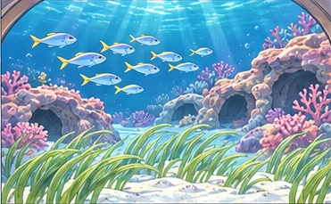
kinds of coral looked like blue fingers or lacy fans. Others looked like deer antlers or lettuce leaves or mushrooms or trees.
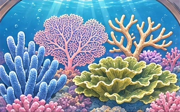
read in the book:
Coral reefs are only found in warm, tropical waters. Nearly 5,000 different species of live around coral reefs in the Indian and Pacific Oceans.
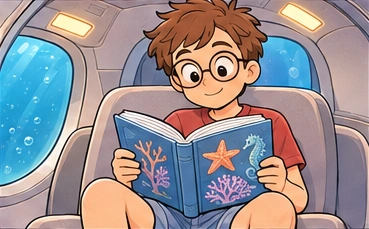
Jack pulled out his pencil and .
He started to write a .
warm water over 5,000 kinds of fish
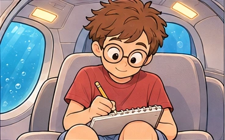
“!” said Annie.
The sub past a huge starfish. Then a pink jellyfish. Then a blue sea horse.
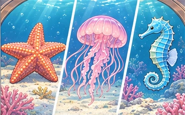
added to his list:
jellyfish sea horses
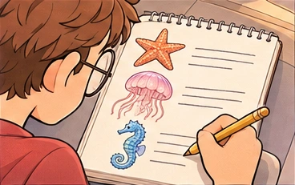
“What is that?” said .
saw a creature that looked like a giant pancake with a long tail.
“A stingray!” said . He put that on his list as well.
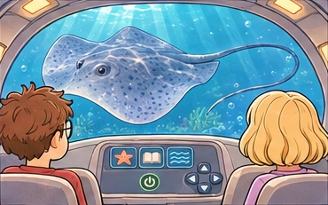
“And that?” said .
She at the biggest shell Jack had ever seen. It was as big as a footstool.
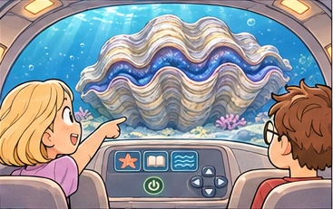
“I’ll have to check on that one,” said . He turned the pages of the ocean book. When he got to the page about clams, he read aloud:
The giant clam of the is three feet wide and weighs up to 200 pounds.
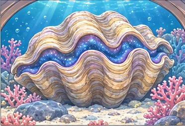
“,” said Annie.
“No kidding,” said . He added “giant clam” to his list.
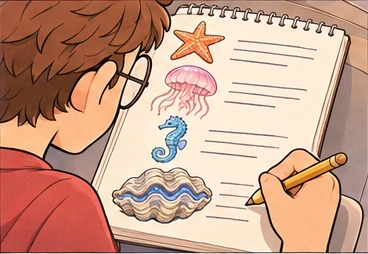
“!” cried Annie.
Jack looked up. Two were peering in the window. They tapped their noses against the glass.
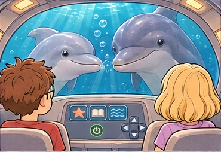
Their eyes were . They seemed to be smiling.
laughed. “It’s like we’re in a fish tank—and they’re looking at us,” he said.
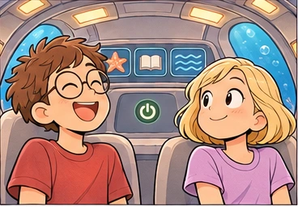
“Their names are Sukie and Sam,” said . “Sister and brother.”
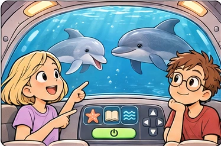
“You’re nuts,” said .
“Here’s a kiss for you, Sukie,” said. She pressed her lips to the glass as if she were kissing the dolphin’s nose.
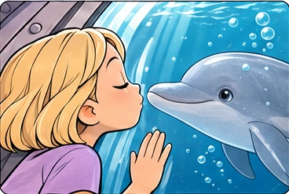
“, brother,” said Jack.
But the opened her mouth and tossed her head. She seemed to be laughing.
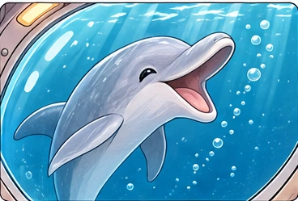
“Hey, I know the answer to the —!” said Annie. “They’re gray and plain. But they have great beauty inside.”
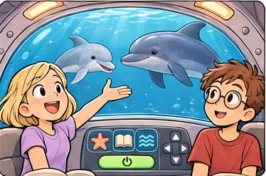
“You forgot the ‘rough as a rock’ part,” said Jack. “ skin looks smooth and slippery.”
“, right,” said Annie.
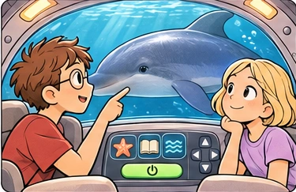
The flipped their tails. They swam off into the light blue water.
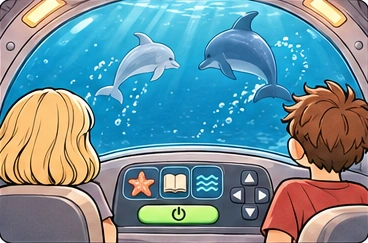
“! Don’t go!” called Annie. “Sukie!”
But the were gone.
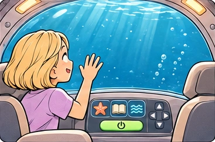
“It’s time for us to go, too,” said Jack. He was afraid someone might be looking for the .
“But we haven’t solved the ,” said Annie.
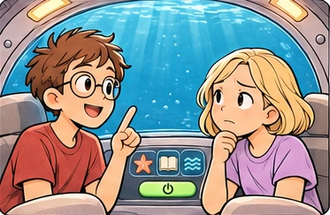
studied the bright underwater world.
“I don’t see the answer,” he said. “’s nothing plain at all out there.”
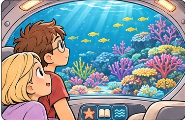
“Then maybe the answer’s in the ,” said Annie.
They around the tiny space.
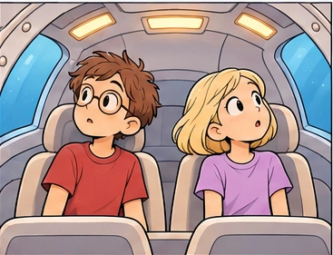
“I’ll check the computer,” said . He studied the row of pictures at the top of the screen.
He the book picture.
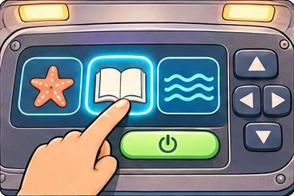
The words SHIP’S LOG onto the screen.
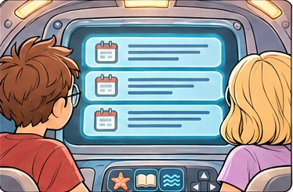